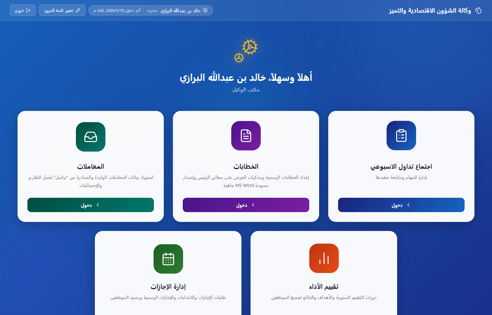
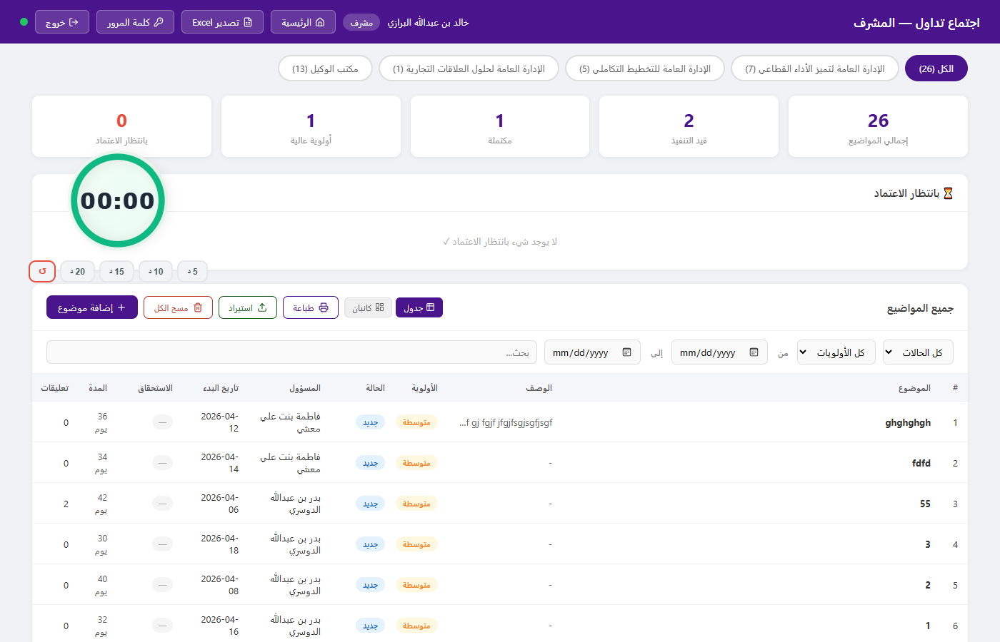
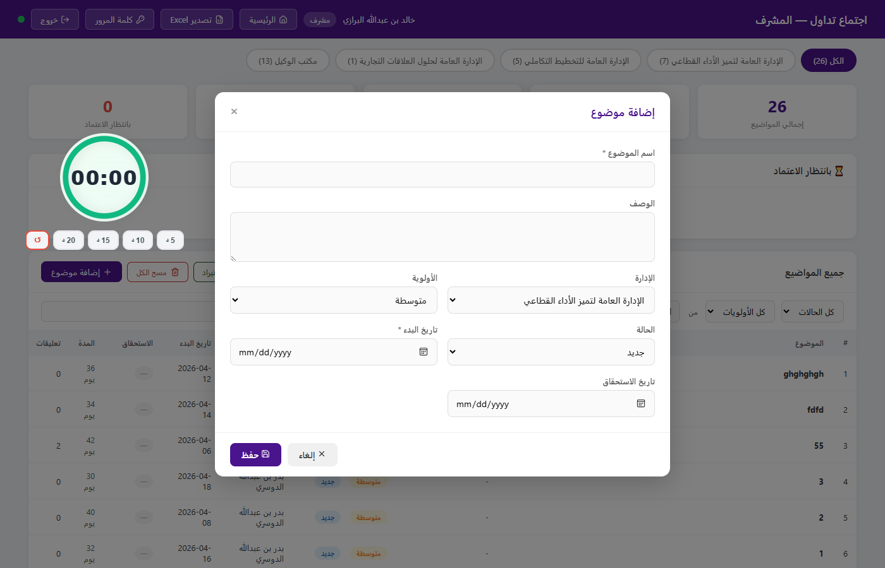
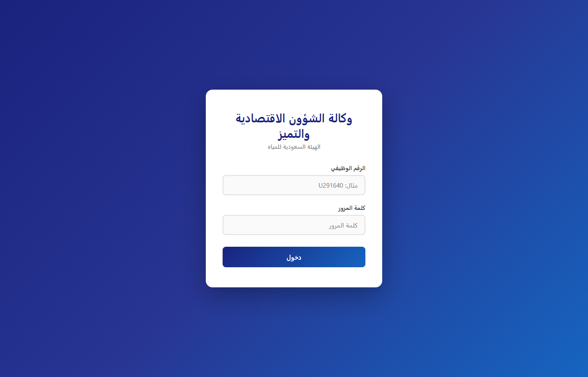

Tadawul Platform
1. System Overview
The Task Management System (اجتماع تداول) is the core workflow module of the Tadawul platform. It enables cross-departmental task creation, assignment, tracking, and approval — all within a role-based access model that reflects the organizational hierarchy of the Saudi Water Authority.
1.1 User Roles
Full visibility across all departments. Can create, edit, delete and approve any task.
Cross-department read/write. Creates tasks, approves change requests, exports reports.
Department-scoped. Manages own department's tasks, approves employee submissions.
Personal task view. Updates status on assigned tasks, adds comments, submits change requests.
2. UX Walkthrough
2.1 Landing / Hub Page
After login, all users land on a unified hub page that surfaces the systems they are authorised to access. The hub adapts to the user's role — an employee sees only the systems relevant to them, while an admin sees all five. The topbar shows the user's name, role, last login time, and server status indicator.

2.2 Deputy / Admin View
The deputy/admin dashboard provides a full cross-department view. Key elements:
- Department tabs — filter tasks by department with live counts per tab.
- KPI cards — at-a-glance counts for pending approval, high priority, in-progress, and completed tasks.
- Approval queue — dedicated panel showing tasks awaiting sign-off, separated from the main list.
- Stopwatch widget — floating meeting timer (draggable) for use during weekly review sessions.
- Export — one-click Excel export of the current filtered view.
- Kanban / Table toggle — switch between tabular and board-style task views.

2.3 Task Creation
Tasks are created via a modal dialog accessible to managers, deputies, and admins. Fields include title, description, target department, assignee, priority, start date, and due date. On save, the task is immediately visible to the assigned employee and the department manager, with a real-time push notification via Server-Sent Events (SSE).

2.4 Manager View
Managers see tasks scoped to their department only. The interface includes an approval queue for employee-submitted change requests (status updates, due date adjustments) and a full task list with filters for status, priority, assignee, and date range.

2.5 Employee View
Employees see only tasks assigned to them. They can update task status (with manager approval required for certain transitions), add comments/guidance entries, and submit change requests for due dates. The interface intentionally omits cross-department visibility and administrative controls.

3. Key Business Rules
3.1 Task Status Workflow
Status transitions by employees generate change requests that appear in the manager's approval queue. Deputies and admins can transition any task directly without approval.
3.2 Change Request Approval
- Employees submit requests to change status or due date — these do not apply immediately.
- The request appears in the manager's and deputy's approval panel.
- On approval, the change is applied and the employee is notified via real-time SSE push.
- On rejection, the task remains unchanged and the request is marked declined.
3.3 Real-Time Synchronisation
4. Technical Architecture
4.1 Current Stack
| Layer | Technology | Purpose |
|---|---|---|
| Runtime | Node.js 20 + Express 5 | HTTP server, REST API, SSE endpoint |
| Database | SQLite (better-sqlite3) | All persistent data — tasks, users, departments, history |
| Authentication | JWT (jsonwebtoken, bcryptjs) | Stateless session tokens, 8-hour expiry, role embedded in token |
| Real-time | Server-Sent Events (SSE) | One-way server-to-client broadcast on data changes |
| Frontend | Vanilla HTML/CSS/JS | Static files served by Express; no framework, no build step |
| Icons | Lucide (CDN) | Consistent icon set across all pages |
| Export | SheetJS (XLSX, CDN) | Client-side Excel generation from filtered task data |
4.2 Data Model — Tasks
| Field | Type | Description |
|---|---|---|
| id | TEXT (UUID) | Primary key |
| name | TEXT | Task title |
| description | TEXT | Optional detail |
| priority | TEXT | عالية / متوسطة / منخفضة |
| status | TEXT | جديد / قيد التنفيذ / مكتملة |
| dept_id | INTEGER | FK → departments |
| assigned_to | TEXT | FK → employees |
| created_by / role | TEXT | Creator identity + role at creation time |
| start_date / due_date | TEXT (ISO) | Date range |
| approved | INTEGER | 1 = live, 0 = pending deputy approval |
| created_at | TEXT (ISO) | Server timestamp |
4.3 API Endpoints — Tasks
| Method | Endpoint | Access | Description |
|---|---|---|---|
| GET | /api/tasks/all | Deputy, Admin | All tasks, all departments |
| GET | /api/tasks/dept/:id | Manager | Tasks for own department |
| GET | /api/tasks/my | Employee | Tasks assigned to calling user |
| POST | /api/tasks | Manager+ | Create task |
| PATCH | /api/tasks/:id | Manager+ | Update task fields directly |
| POST | /api/tasks/:id/changes | Employee | Submit change request |
| PATCH | /api/tasks/changes/:id | Manager+ | Approve / reject change request |
| DELETE | /api/tasks/:id | Deputy, Admin | Delete task |
4.4 Authentication Flow
4.5 Real-Time Architecture
A single /api/events SSE endpoint maintains an open connection to every active browser tab.
On any write operation (task create/update/delete/approve), the server calls broadcast()
which sends a lightweight signal to all connected clients. Each client re-fetches only its own data slice.
A server-side heartbeat (every 5 seconds) keeps connections alive and allows clients to detect
server unavailability via a 12-second silence threshold.